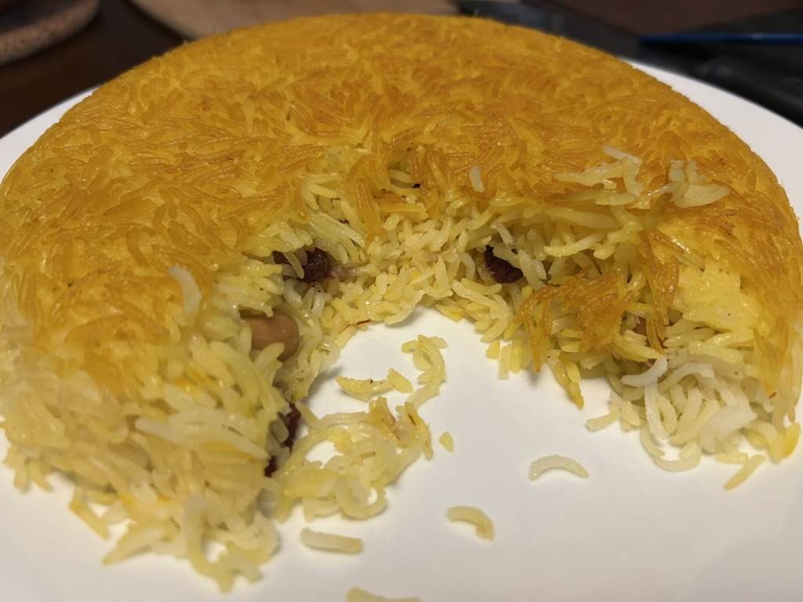
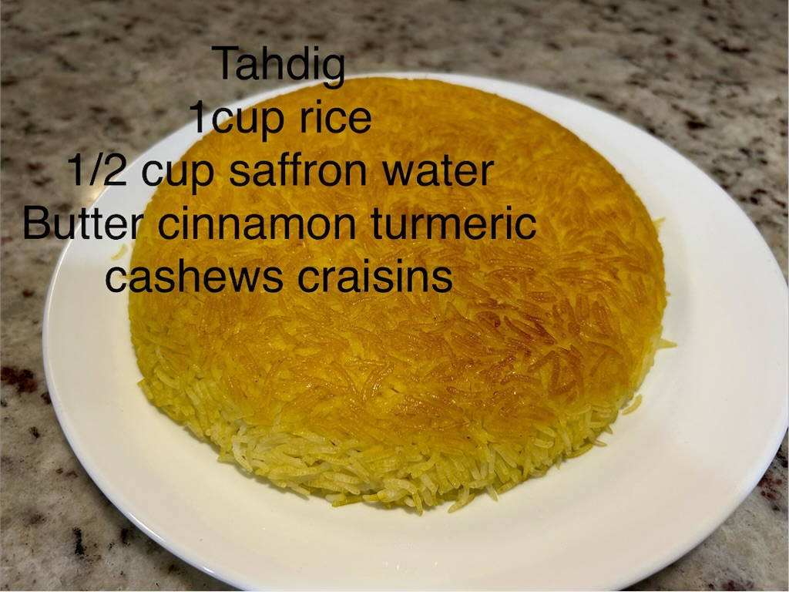

Side
Persian Tahdig
The old version from my kitchen notes: saffron basmati with a deeply golden crust and little pockets of cinnamon, cashews and craisins.


Ingredients
- 1 cup basmati rice
- 1/4 tsp saffron threads, bloomed in 3 tbsp hot water
- 1 1/2 tbsp butter, plus a little more if needed for the pan
- 1/4 tsp cinnamon
- A small pinch of turmeric
- 2 tbsp cashews, roughly chopped
- 2 tbsp craisins
- Salt, for the rice water
Method
- Rinse the rice until the water runs mostly clear. Parboil it in generously salted water for about 5–7 minutes, until the grains are flexible outside but still distinctly firm in the centre, then drain very well.
- Bloom the saffron in 3 tablespoons hot water. Generously butter the bottom and lower sides of a small nonstick pan and add about half of the saffron water with a small pinch of turmeric.
- Add roughly half the rice and press it gently into an even layer. Scatter over the cashews, craisins and cinnamon, then cover with the remaining rice. Spoon the remaining saffron water over the top.
- Cover tightly and cook over low heat for about 25–35 minutes. The rice finishes cooking in the covered pan while the buttered bottom slowly fries into the tahdig crust.
- Uncover for the final 5–10 minutes, watching carefully, to let excess moisture escape and deepen the crust. The exact time depends strongly on the pan and burner.
- Remove from the heat and let stand for about 5 minutes. Loosen the edge if necessary, place a plate over the pan and invert decisively.
Notes
This is reconstructed from an old kitchen note whose ingredient list survived more precisely than the method. The measurements above are therefore working measurements rather than a recovered exact formula. The technique I remember is stovetop rather than simply “steaming” the rice: the par-cooked rice finishes covered in a nonstick pan while the buttered bottom slowly fries into the crisp golden shell. Cinnamon, cashews and craisins are scattered through the rice rather than packed into the crust itself.
Ramekin variation. For individual tahdig, generously butter 3–4 small oven-safe ramekins, add a little saffron water to each and pack in the par-cooked rice mixture. Cover tightly with foil and bake at 375°F for about 25 minutes, then uncover and continue for roughly 10–15 minutes, until the edges are deeply golden. Rest briefly and invert. Treat these timings as a starting point: ramekin material and size make a large difference.